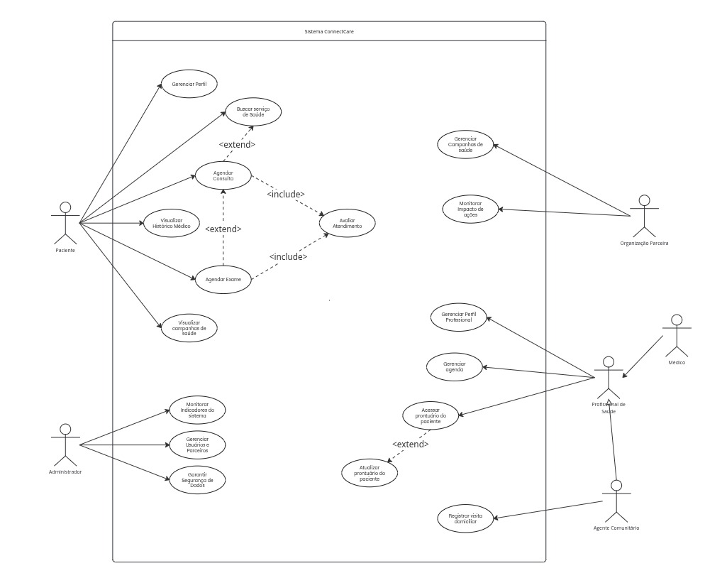

Casos de Uso
Atores e Casos de Uso do Sistema ConnectCare
Utilizamos um Diagrama de Casos de Uso para apresentar uma visão externa das funções e serviços oferecidas aos usuários da plataforma ConnectCare. O diagrama ilustra as interações entre os diferentes atores e os processos do sistema.

Link para o diagrama em versão pdf.
| Ator | Descrição |
|---|---|
| Paciente | Usuário principal que busca e acessa serviços de saúde, agenda consultas, exames e visualiza seu histórico médico. |
| Profissional de Saúde | Médicos, enfermeiros e agentes comunitários que usam o sistema para gerenciar atendimentos e acessar ou atualizar os prontuários dos pacientes. |
| Organização Parceira | ONGs, hospitais ou instituições governamentais que divulgam, gerenciam e monitoram o impacto de suas campanhas e iniciativas de saúde. |
| Administrador do Sistema | Responsável por manter o sistema, monitorar indicadores de desempenho, gerenciar usuários e parceiros, e garantir a segurança dos dados. |
A tabela abaixo detalha os atores que interagem com o sistema e as ações (casos de uso) que cada um pode realizar, conforme representado no diagrama de casos de uso.
| Ator | Casos de Uso |
|---|---|
| Paciente |
|
| Administrador |
|
| Organização Parceira |
|
| Profissional de Saúde |
|
| Médico | Herda todos os casos de uso do Profissional de Saúde**. |
| Agente Comunitário |
|
Relações entre Casos de Uso
O diagrama também especifica relações entre os casos de uso, que indicam como eles se conectam:
<<extend>>: Indica que um caso de uso pode, opcionalmente, estender a funcionalidade de outro.Buscar serviço de SaúdeestendeAgendar Consulta.Visualizar Histórico MédicoestendeAgendar Consulta.Atualizar prontuário do pacienteestendeAcessar prontuário do paciente.Agendar ConsultaestendeAvaliar Atendimento.Agendar ExameestendeAvaliar Atendimento.
Generalização/Especialização de Atores
- Os atores Médico e Agente Comunitário são especializações do ator Profissional de Saúde. Isso significa que eles herdam todas as funcionalidades (casos de uso) do Profissional de Saúde, além de poderem ter suas próprias funcionalidades específicas, como é o caso do Agente Comunitário com o caso de uso
Registrar visita domiciliar.
Especificação de Casos de Uso – ConnectCare
UC01 – Gerenciar Perfil
Ator Principal: Paciente
1. Breve Descrição
Este caso de uso permite ao paciente consultar e editar seus dados cadastrais, como nome completo, CPF, e-mail, data de nascimento, entre outros. As alterações são validadas e salvas no sistema, com registro da operação em log.
2. Atores Envolvidos
- Paciente
3. Pré-condições
- O paciente deve estar autenticado no sistema.
4. Pós-condições
- Os dados do perfil são atualizados nos registros.
- A operação é registrada no log de auditoria.
5. Fluxo Principal de Eventos
- O paciente acessa o sistema e seleciona a opção “Gerenciar Perfil”.
- O sistema apresenta um formulário com os dados cadastrados.
- O paciente realiza as alterações desejadas.
- O paciente confirma a edição.
- O sistema valida os campos editados (formato, obrigatoriedade).
- O sistema salva as alterações e registra no log.
- O sistema apresenta mensagem de confirmação de sucesso.
6. Fluxos Alternativos
[FA01] – Cancelamento da Edição
- O paciente cancela a edição antes de confirmar.
- O sistema descarta as alterações e retorna à tela inicial do perfil.
7. Fluxos de Exceção
[FE01] – Dados Inválidos
- O sistema identifica erros nos campos preenchidos.
- O sistema destaca os campos com erro e solicita correção antes de prosseguir.
8. Regras de Negócio
- RN01: O e-mail deve estar em formato válido e ser único no sistema.
- RN02: O CPF deve obedecer ao padrão de formatação brasileiro (XXX.XXX.XXX-XX).
- RN03: Os campos nome completo, data de nascimento, CPF e e-mail são obrigatórios.
9. Requisitos Especiais
- RE01: Os dados sensíveis devem ser criptografados.
- RE02: A funcionalidade deve ser compatível com dispositivos móveis (layout responsivo).
UC02 – Visualizar Campanhas de Saúde
1. Breve Descrição
- Permite ao paciente consultar campanhas de saúde ativas em sua região, com base em sua localização geográfica, visualizando detalhes como tipo, data, local e orientações.
2. Atores
- Paciente.
3. Precondições
- O paciente deve estar autenticado na plataforma.
4. Pós-condições
- O paciente visualiza informações detalhadas sobre uma campanha de saúde.
- A localização do paciente pode ser registrada temporariamente para exibir campanhas relevantes.
5. Fluxo Principal
- O paciente acessa a funcionalidade “Campanhas de Saúde”.
- O sistema solicita a localização do paciente (via GPS ou entrada manual).
- O sistema exibe uma lista de campanhas ativas com base na localização.
- O paciente seleciona uma campanha da lista.
- O sistema apresenta os detalhes da campanha: tipo, local, data, horário, público-alvo e orientações.
- Fim do caso de uso.
6. Fluxos de Exceção
- [FE01] Erro de Conexão: O sistema não consegue acessar o servidor. Exibe mensagem informando o erro e, se possível, apresenta dados em cache (offline).
- [FE02] Localização Não Informada: Caso o GPS falhe ou o paciente negue o acesso à localização, o sistema solicita entrada manual de um bairro ou CEP.
7. Regras de Negócio
- RN01: A listagem de campanhas deve considerar apenas aquelas em andamento ou com data futura.
- RN02: A localização pode ser obtida via GPS, mas deve haver opção de entrada manual.
- RN03: As campanhas devem ser filtradas por proximidade geográfica.
8. Requisitos Especiais
- RE01: Funcionalidade de cache para acesso offline após o primeiro carregamento.
- RE02: Interface adaptada para dispositivos móveis.
- RE03: Suporte a filtros por tipo de campanha (ex.: vacinação, exames, palestras).
UC03 – Agendar Exame
1. Breve Descrição
- Este caso de uso permite que o paciente ou agente comunitário realize o agendamento de exames médicos por meio da plataforma. O sistema apresenta os tipos de exames disponíveis, locais de atendimento, datas e horários, permitindo a seleção e confirmação de uma opção.
2. Atores
- Paciente
- Agente Comunitário
3. Precondições
- O ator deve estar devidamente autenticado no sistema.
- Devem existir locais e horários disponíveis previamente cadastrados no sistema.
4. Pós-condições
- Um novo exame é agendado e associado ao paciente.
- O sistema atualiza a agenda da unidade de atendimento.
5. Fluxo Principal
- O ator seleciona a funcionalidade “Agendar Exame” no menu principal.
- O sistema exibe uma lista de tipos de exame disponíveis.
- O ator escolhe o tipo de exame desejado.
- O sistema apresenta os locais que oferecem o exame, com datas e horários disponíveis.
- O ator seleciona a unidade, data e horário desejados.
- O sistema exibe os dados do agendamento para confirmação.
- O ator confirma o agendamento.
- O sistema registra o agendamento, atualiza a agenda da unidade e exibe mensagem de confirmação.
6. Fluxos Alternativos
[FA01] – Reagendar Exame
- Em vez de iniciar um novo agendamento, o ator seleciona um exame previamente agendado.
- O sistema permite selecionar uma nova data e horário.
- O fluxo retorna ao passo 6 do Fluxo Principal.
[FA02] – Cancelar Agendamento
- O ator opta por cancelar um exame já agendado.
- O sistema solicita confirmação.
- Ao confirmar, o sistema remove o exame da agenda do paciente e da unidade de atendimento.
7. Fluxos de Exceção
[FE01] – Nenhuma Disponibilidade Encontrada
- O sistema não encontra datas ou horários disponíveis para o exame selecionado.
- Exibe mensagem ao usuário e retorna ao passo 2 do Fluxo Principal.
[FE02] – Falha na Comunicação com o Sistema
- Ocorre uma falha de conexão no momento da confirmação do agendamento.
- O sistema informa o erro e solicita que o ator tente novamente mais tarde.
- O caso de uso é encerrado.
8. Regras de Negócio
- RN01: O agendamento de exames deve respeitar um intervalo mínimo de 24 horas entre a solicitação e o atendimento.
- RN02: O paciente não pode ter dois exames marcados para o mesmo horário.
- RN03: Cada exame deve ser vinculado a um local e profissional habilitado.
9. Requisitos Especiais
- RE01: A interface de agendamento deve ser otimizada para uso em dispositivos móveis.
- RE02: O sistema deve oferecer suporte a modo offline, salvando solicitações para sincronização posterior.
- RE03: As informações pessoais e de saúde devem ser protegidas conforme a LGPD.
UC04 – Agendar Consulta
1. Breve Descrição
- Este caso de uso permite ao paciente localizar e agendar consultas médicas por meio da plataforma. O sistema oferece opções com base na localização do paciente, permitindo a escolha da especialidade, unidade de saúde, data e horário desejados.
2. Atores
- Paciente
3. Precondições
- O paciente deve estar autenticado no sistema.
- Devem existir profissionais e unidades com horários disponíveis cadastrados.
- O perfil do paciente deve estar completo e validado.
4. Pós-condições
- Uma nova consulta é registrada no sistema, associada ao paciente e ao profissional selecionado.
- A agenda do profissional de saúde é atualizada.
- Uma confirmação é enviada ao paciente.
5. Fluxo Principal
- O paciente acessa a funcionalidade “Agendar Consulta”.
- O sistema solicita critérios de busca (ex: especialidade, sintomas, localidade).
- O paciente informa os critérios desejados.
- O sistema apresenta uma lista de unidades e profissionais com horários disponíveis.
- O paciente seleciona uma opção de local, data e horário.
- O sistema exibe os detalhes do agendamento.
- O paciente confirma o agendamento.
- O sistema registra a consulta, atualiza a agenda do profissional e exibe mensagem de confirmação.
6. Fluxos Alternativos
[FA01] – Reagendar Consulta
- O paciente opta por alterar uma consulta previamente agendada.
- O sistema exibe a lista de agendamentos futuros.
- O paciente seleciona um deles e segue o fluxo a partir do passo 3 do Fluxo Principal.
[FA02] – Cancelar Consulta
- O paciente escolhe uma consulta agendada para cancelamento.
- O sistema solicita confirmação.
- Após confirmar, o sistema remove a consulta da agenda do profissional e do histórico do paciente.
[FA03] – Avaliação do Atendimento (Extensão)
- Após o comparecimento à consulta, o sistema pode sugerir ao paciente que avalie o atendimento.
- O paciente escolhe se deseja realizar a avaliação.
- Caso aceite, o sistema ativa o caso de uso “Avaliar Atendimento”.
7. Fluxos de Exceção
[FE01] – Falta de Disponibilidade
- O sistema não encontra horários disponíveis conforme os critérios informados.
- Uma mensagem é exibida, e o fluxo retorna ao passo 2 para nova busca.
[FE02] – Falha de Comunicação
- Ocorre uma falha técnica no momento da confirmação.
- O sistema informa o erro e salva os dados localmente para tentativa posterior.
[FE03] – Dados Obrigatórios Não Preenchidos
- O paciente tenta avançar sem preencher informações mínimas.
- O sistema impede o prosseguimento e solicita o preenchimento.
8. Regras de Negócio
- RN01: O paciente não pode agendar duas consultas simultâneas no mesmo horário.
- RN02: Consultas devem ser agendadas com no mínimo 2 horas de antecedência.
- RN03: O sistema deve permitir cancelamento de consulta com no mínimo 1 hora de antecedência.
9. Requisitos Especiais
- RE01: O sistema deve disponibilizar lembretes automáticos da consulta (ex: 24h e 1h antes).
- RE02: A interface deve apresentar mapa interativo e opção de visualização offline da localização.
- RE03: Toda comunicação deve ser criptografada, em conformidade com a LGPD.
UC05 – Avaliar Atendimento
1. Breve Descrição
- Este caso de uso permite que o paciente avalie um atendimento previamente realizado — seja consulta ou exame — fornecendo notas e comentários sobre a qualidade do serviço recebido. A avaliação serve como insumo para gestão de qualidade e atribuição de pontos de fidelidade ao paciente.
2. Atores
- Paciente
3. Relações com outros casos de uso
- Este caso de uso é uma extensão opcional (
<<extend>>) de: - UC03 – Agendar Exame
- UC04 – Agendar Consulta
4. Precondições
- O paciente deve estar autenticado no sistema.
- Deve existir ao menos um atendimento finalizado vinculado ao paciente e ainda não avaliado.
5. Pós-condições
- A avaliação é registrada no sistema.
- Os pontos de fidelidade são creditados ao paciente.
- A avaliação passa a compor o histórico do atendimento avaliado.
6. Fluxo Principal
- O sistema identifica um atendimento finalizado e exibe convite para avaliação.
- O paciente acessa a funcionalidade “Avaliar Atendimento”.
- O sistema apresenta uma lista de atendimentos elegíveis para avaliação.
- O paciente seleciona um atendimento.
- O sistema exibe o formulário de avaliação (notas e comentários).
- O paciente preenche e envia a avaliação.
- O sistema salva a avaliação, atualiza o histórico e credita os pontos de fidelidade.
- O sistema exibe mensagem de agradecimento e confirmação.
7. Fluxos Alternativos
[FA01] – Avaliar Atendimento a Qualquer Momento
- O paciente acessa manualmente seu histórico e seleciona um atendimento para avaliar.
- O sistema verifica elegibilidade e, se permitido, segue o fluxo a partir do passo 5 do Fluxo Principal.
8. Fluxos de Exceção
[FE01] – Atendimento Já Avaliado
- O paciente tenta avaliar um atendimento já avaliado.
- O sistema bloqueia a ação e informa que a avaliação já foi registrada.
[FE02] – Falha de Comunicação
- Ocorre uma falha técnica durante o envio da avaliação.
- O sistema salva a avaliação localmente e agenda o envio posterior.
- Uma mensagem informa que a submissão será concluída automaticamente.
[FE03] – Dados Incompletos na Avaliação
- O paciente tenta enviar o formulário sem preencher os campos obrigatórios.
- O sistema impede o envio e solicita correção.
9. Regras de Negócio
- RN01: Cada atendimento só pode ser avaliado uma única vez.
- RN02: O paciente deve atribuir, no mínimo, uma nota obrigatória para submissão.
- RN03: O envio da avaliação gera pontos de fidelidade, creditados automaticamente.
10. Requisitos Especiais
- RE01: O sistema deve funcionar em dispositivos móveis de baixo desempenho.
- RE02: O mecanismo de pontos deve ser flexível, com possibilidade de parametrização futura.
- RE03: Todos os dados de avaliação devem ser armazenados de forma segura e anônima, conforme a LGPD.
UC06 – Registrar Visita Domiciliar
1. Breve Descrição
- Este caso de uso permite ao agente comunitário de saúde registrar formalmente uma visita domiciliar realizada a um paciente ou família. O processo envolve preenchimento de informações como data, hora, motivo da visita, observações, encaminhamentos e, opcionalmente, mídias (fotos ou áudios).
2. Atores
- Agente Comunitário
3. Precondições
- O agente deve estar autenticado no sistema.
- O paciente ou a família visitada deve estar previamente cadastrada, ou o sistema deve permitir o cadastro durante o processo.
4. Pós-condições
- A visita é registrada no banco de dados e associada ao paciente ou grupo familiar.
- As informações ficam disponíveis para consulta por profissionais autorizados.
- O prontuário do paciente é atualizado com o registro da visita.
5. Fluxo Principal
- O agente acessa a funcionalidade “Registrar Visita Domiciliar”.
- O sistema apresenta um formulário padrão de registro de visita.
- O agente busca e seleciona o paciente ou grupo familiar visitado.
- O agente informa os dados da visita:
- Data e hora
- Motivo principal
- Observações
- Encaminhamentos ou pendências
- O agente anexa mídias (opcional).
- O agente confirma o envio.
- O sistema valida os dados e salva o registro.
- O sistema exibe mensagem de confirmação.
6. Fluxos Alternativos
[FA01] – Paciente ou Família Não Cadastrado
- O agente não encontra o paciente ou grupo na busca.
- O sistema oferece a opção de “Cadastrar Novo Paciente/Família”.
- Após o cadastro, o fluxo retorna ao passo 3 do Fluxo Principal.
[FA02] – Anexar Mídia
- Durante o preenchimento, o agente opta por anexar fotos ou áudios da visita.
- O sistema permite upload e visualização do conteúdo antes da confirmação.
7. Fluxos de Exceção
[FE01] – Dados Obrigatórios Incompletos
- O agente tenta concluir o registro sem preencher todos os campos obrigatórios.
- O sistema indica os campos que precisam ser preenchidos e impede o envio.
[FE02] – Falha no Registro
- Ocorre uma falha de conexão no momento do envio.
- O sistema salva localmente o registro e informa que ele será sincronizado automaticamente.
8. Regras de Negócio
- RN01: O registro da visita só pode ser finalizado se todos os campos obrigatórios estiverem preenchidos.
- RN02: A data e hora da visita devem ser coerentes com a data atual (não podem ser futuras).
- RN03: O registro da visita deve ser vinculado ao prontuário do paciente, quando aplicável.
9. Requisitos Especiais
- RE01: O formulário deve ser responsivo, com campos otimizados para uso em dispositivos móveis.
- RE02: O sistema deve funcionar offline e realizar sincronização automática quando houver conexão.
- RE03: As informações da visita devem ser armazenadas de forma segura, com criptografia em repouso e em trânsito.